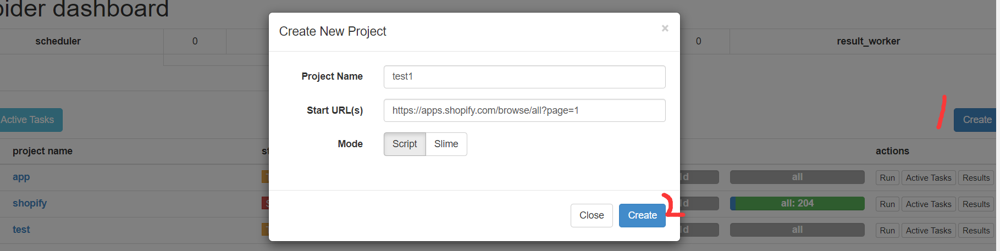

# 操作系统
# 软件依赖
^ Lastest ~ minimum
- Python@3.6^
- Pip@~
- node.js@~
# 实验环境
- Windows10
- python@3.68
- pip@19.2.3
# 什么是 PySpider
pyspider 是支持 WebUI 的，支持任务监控，项目管理，以及多种数据库的一个强大的爬虫框架
pyspider 的优点，它有这么几个优点
- 提供 WebUI 界面，调试爬虫很方便。
- 可以很方便的进行爬取的流程监控和爬虫项目管理。
- 支持常见的数据库。
- 支持使用 PhantomJS，可以抓取 JavaScript 页面。
- 支持优先级定制和定时爬取等功能。
和 Scrapy 的比较
- pyspider 提供 WebUI,Scrapy 它采用的是代码和命令行操作，但可以通过对接 Portia 现可视化配置。
- pyspider 支持 PhantomJS 来进行 JavaScript 谊染页面的采集 Scrapy 可以对接 Sc rapy-Splash 组件，这需要额外配置。
- pyspider 中内置 pyquery 作为选择器而 Scrapy 接了 XPath 对接 css 选择器和正则匹配。
- pyspider 的可扩展程度不高，Scrapy 可以通过对接其他的模块实现强大的功能，模块之间的耦合度低。
总结：
所以如果要快速实现一个页面的抓取，推荐使用 pyspider, 开发更加便捷，如果要应对反爬程度很强、超大规模的抓取，推荐使用 Scrapy。
pyspider 的架构相对简单分为这么几个部分：scheduler（调度器）、fetcher（抓取器）、processor（脚本执行）任务由 scheduler 发起调度，fetcher 抓取网页内容， processor 执行预先编写的 py 脚本，输出结果或产生新的提链任务（scheduler)、整个爬取的过程受，Monitor（监控器）的监控，结果保存在 Result Worker（结果处理器）中。
2. 每个 pyspider 的项目对应一个 Python 脚本，该脚本中定义了一个 Handler 类，它有 on_start (）方法 爬取首先调用 on_start （）方法生成最初的抓取任务，然后发送给 Scheduler 进行调度。
执行流程：
- scheduler 将抓取任务分发给 Fetcher 进行抓取， Fetcher 执行并得到响应，随后将响应发送给 Processer
Processer 处理响应并提取 url，新的 URL 生成新的抓取任务，然后通过消息队列的方式通知 Schduler 当前抓取任务执行情况，并将新生成的抓取任务发送 Scheduler 如果生成了提取结果，则将其发送到结果队列等待 Result Worker 处理 - Scheduler 接收到新的抓取任务，然后查询数据库，判断其如果是新的抓取任务或者是需要重试的任务就继续进行调度，然后将其发送回 Fetcher 进行抓取
不断重复以上流程实现抓取
# PySpider 安装
创建虚拟环境
作者使用的是 Anaconda 虚拟环境，可以在 Anaconda 官网下载并安装。这里必须指定 python3.6 版本，若用 python3.7 会报错，需要修改源码
python3.7修改源码
解决办法是将这个关键字替换掉。主要有两个文件： Python\Lib\site-packages\pyspider\run.py 和 Python\Lib\site-packages\pyspider\fetcher\tornado_fetcher.py 中的async全部替换成sharkconda create -n pys python=3.6
windows下Anaconda的常用命令
- 创建虚拟环境，虚拟环境名为 pys
conda create -n pys
- 删除 pys 虚拟环境
```bash conda remove -n pys ```- 进入 pys 虚拟环境
conda activate pys
- 退出 pys 虚拟环境
conda deactivate pys
- 创建虚拟环境，虚拟环境名为 pys
安装 pyspider
conda activate pys
pip install pyspider安装 PHantomJS
下载 PHantomJS
下载对应系统的安装包，作者下载的是 windows 系统的
解压文件夹后，将 bin 目录下的 phantomjs.exe 放入当前环境的 pyspider 包根目录下
我的虚拟环境目录是在 J:\Anaconda3\envs\pys
所以要将该文件放入 J:\Anaconda3\envs\pys修改 werkzeug 版本
werkzeug 的版本为 1.0.0，这个版本中没有 DispatcherMiddleware 方法，所以还是降低版本。
注意降低版本不能低于 0.15 版本，因为我们的 pyspider 要求大于 0.15 版本以上python -m pip uninstall werkzeug
python -m pip install werkzeug==0.16.0
# PySpider 启动
进入虚拟环境后，通过命令启动 PySpider
conda activate pys | |
pyspider |
如果发现 PySpider 卡在 result_worker starting... 不动，请关闭公网防火墙
或则按下面操作步骤操作
- 打开一个 cmd 窗口，启动 pyspider，等待 10 秒左右
- 保持第一个 cmd 窗口，再打开一个新的 cmd 窗口启动 pyspider
- 第二个 cmd 窗口成功 pyspider 后关闭第一个 cmd 窗口
服务启动后，在浏览器访问 localhost:5000，即可进入界面
# 界面介绍
- 定时任务：当前设置的定时任务
- 组：可以将爬虫分成不同组，然后按组调用。设置 group 为 delete 和状态 STOP，等待 24 小时将可以删除爬虫
- 爬虫：爬虫程序
- 任务状态：
- TODO - 创建一个脚本来编写
- STOP- 您可以将项目标记为 STOP 您希望它停止（= =）。
- CHECKING- 修改正在运行的项目时，为防止不完整修改，项目状态将 CHECKING 自动设置。
- DEBUG/ RUNNING- 这两种状态对蜘蛛没有区别。但是将它标记为 DEBUG 第一次运行然后将其更改 RUNNING 为检查后是很好的。
- rate：
爬取的速率，rate - 一秒钟内有多少请求，burst - 考虑到这种情况，
rate/burst = 0.1/3 这意味着蜘蛛每 10 秒抓一页。所有任务都已完成，项目每分钟检查最后更新的项目。假设找到 3 个新项目，pyspider 将 “爆发” 并抓取 3 个任务而不等待 3 * 10 秒。但是，第四项任务需要等待 10 秒。 - avg time：平均时间
- progress：表示每 5 分钟，每小时，每天和总体的请求次数
# 编写爬虫
本文目标是爬取 Shopify 的 app 信息
目标网址：https://apps.shopify.com/browse/all?page=1
新建爬虫
将下面代码复制进右边编辑栏
#!/usr/bin/env pythonfrom pyspider.libs.base_handler import *
from pyspider.database.mysql.mysql import SQL
class Handler(BaseHandler):
crawl_config = {
}def __init__(self):
self.base_url = 'https://apps.shopify.com/browse/all?page=%s'
self.page_num = 1
self.total_num = 202
@every(minutes=24 * 60)
def on_start(self):
while self.page_num <= self.total_num:
url = self.base_url % str(self.page_num)
self.crawl(url, callback=self.index_page,validate_cert=False)
self.page_num += 1
@config(age=10 * 24 * 60 * 60)
def index_page(self, response):
data = []
for each in response.doc('.grid--equal-height > div > div').items():
dic={
"title": each.find('h2').text(),
"developer": each.find('div[class="ui-app-card__developer-name"]').text(),
"description": each.find('p[class="ui-app-card__details"]').text(),
"rate": each.find('span[class="ui-star-rating__rating"]').text(),
'reviews': each.find('span[class="ui-review-count-summary"]').text(),
"price": each.find('div[class="ui-app-card__pricing"]').text()
}data.append(dic)
return datadef on_result(self,result):
sql = SQL()
if result:
for data in result:
sql.insert('shopify',**data)
点击 save 和 run 后，会出现 202 条 follow，这是因为在代码中设置了从第一页爬取到 202 页，在这个页面能帮我们看到爬虫将要爬取的链接，点击每条 follow 的箭头则会启动那一个 url，想要一次爬取 202 条则需要在首页里面执行爬虫
保存数据
安装 MySQL，并创建表 shopify
CREATE TABLE `shopify` (
`id` int NOT NULL AUTO_INCREMENT,
`title` varchar(100) DEFAULT NULL,
`developer` varchar(50) DEFAULT NULL,
`description` text,
`rate` varchar(30) DEFAULT NULL,
`reviews` varchar(30) DEFAULT NULL,
`price` varchar(30) DEFAULT NULL,
PRIMARY KEY (`id`)
) ENGINE=InnoDB AUTO_INCREMENT=4817 DEFAULT CHARSET=utf8;
创建文件 mysql.py
写入下面代码，修改数据库连接相关信息
#!/usr/bin/env python#-*- encoding: utf-8 -*-from six import itervalues
import pymysqlclass SQL():
#数据库初始化def __init__(self):
#数据库连接相关信息hosts = 'localhost'
username = 'root'
password = '6113535'
database = 'test'
charsets = 'utf8'
self.connection = False
try:
self.conn = pymysql.connect(host = hosts,user = username,passwd = password,db = database,charset = charsets)
self.cursor = self.conn.cursor()
self.cursor.execute("set names "+charsets)
self.connection = True
except e:
print("Cannot Connect To Mysql!/n",e)
def escape(self,string):
return '%s' % string
#插入数据到数据库def insert(self,tablename=None,**values):
if self.connection:
tablename = self.escape(tablename)
if values:
_keys = ",".join(self.escape(k) for k in values)
_values = ",".join(['%s',]*len(values))
sql_query = "insert into %s (%s) values (%s)" % (tablename,_keys,_values)
else:
sql_query = "replace into %s default values" % tablename
try:
if values:
self.cursor.execute(sql_query,list(itervalues(values)))
else:
self.cursor.execute(sql_query)
self.conn.commit()
return True
except e:
print("An Error Occured: ",e)
return False
将文件放到当前环境的 pyspider\database\mysql 文件夹下
爬虫代码中的用 return 返回了数据后就会自动执行 on_result () 函数，这个函数就是调用该文件来把数据保存到 MySQL执行爬虫
回到首页，将爬虫的状态设为 running，然后点击运行
然后就会看到后台飞快的执行，执行完成后可以看见 process 的 all 显示为 204（有两次是测试）